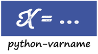

Home



 [
[ ]
] ]
] ]
]
Dark magics about variable names in python
CHANGELOG | API | Playground | :fire: StackOverflow answer
Installation
pip install -U varname
Note if you use python < 3.8, install varname < 0.11
Features
-
Core features:
-
Retrieving names of variables a function/class call is assigned to from inside it, using
varname. - Detecting next immediate attribute name, using
will -
Fetching argument names/sources passed to a function using
argname -
Other helper APIs (built based on core features):
-
A value wrapper to store the variable name that a value is assigned to, using
Wrapper - A decorator to register
__varname__to functions/classes, usingregister - A helper function to create dict without explicitly specifying the key-value pairs, using
jsobj - A
debugfunction to print variables with their names and values exec_codeto replaceexecwhere source code is available at runtime
Credits
Thanks goes to these awesome people/projects:
|
executing |

@alexmojaki |

@breuleux |

@ElCuboNegro |

@thewchan |

@LawsOfSympathy |

@elliotgunton |
Special thanks to @HanyuuLu to give up the name varname in pypi for this project.
Usage
Retrieving the variable names using varname(...)
-
From inside a function
from varname import varname def function(): return varname() func = function() # func == 'func'When there are intermediate frames:
def wrapped(): return function() def function(): # retrieve the variable name at the 2nd frame from this one return varname(frame=2) func = wrapped() # func == 'func'Or use
ignoreto ignore the wrapped frame:def wrapped(): return function() def function(): return varname(ignore=wrapped) func = wrapped() # func == 'func'Calls from standard libraries are ignored by default:
import asyncio async def function(): return varname() func = asyncio.run(function()) # func == 'func'Use
strictto control whether the call should be assigned to the variable directly:def function(strict): return varname(strict=strict) func = function(True) # OK, direct assignment, func == 'func' func = [function(True)] # Not a direct assignment, raises ImproperUseError func = [function(False)] # OK, func == ['func'] func = function(False), function(False) # OK, func = ('func', 'func') -
Retrieving name of a class instance
class Foo: def __init__(self): self.id = varname() def copy(self): # also able to fetch inside a method call copied = Foo() # copied.id == 'copied' copied.id = varname() # assign id to whatever variable name return copied foo = Foo() # foo.id == 'foo' foo2 = foo.copy() # foo2.id == 'foo2' -
Multiple variables on Left-hand side
# since v0.5.4 def func(): return varname(multi_vars=True) a = func() # a == ('a',) a, b = func() # (a, b) == ('a', 'b') [a, b] = func() # (a, b) == ('a', 'b') # hierarchy is also possible a, (b, c) = func() # (a, b, c) == ('a', 'b', 'c') -
Some unusual use
def function(**kwargs): return varname(strict=False) func = func1 = function() # func == func1 == 'func1' # if varname < 0.8: func == func1 == 'func' # a warning will be shown # since you may not want func to be 'func1' x = function(y = function()) # x == 'x' # get part of the name func_abc = function()[-3:] # func_abc == 'abc' # function alias supported now function2 = function func = function2() # func == 'func' a = lambda: 0 a.b = function() # a.b == 'a.b'
The decorator way to register __varname__ to functions/classes
-
Registering
__varname__to functionsfrom varname.helpers import register @register def function(): return __varname__ func = function() # func == 'func'# arguments also allowed (frame, ignore and raise_exc) @register(frame=2) def function(): return __varname__ def wrapped(): return function() func = wrapped() # func == 'func' -
Registering
__varname__as a class property@register class Foo: ... foo = Foo() # foo.__varname__ == 'foo'
Getting variable names directly using nameof
from varname import varname, nameof
a = 1
nameof(a) # 'a'
b = 2
nameof(a, b) # ('a', 'b')
def func():
return varname() + '_suffix'
f = func() # f == 'f_suffix'
nameof(f) # 'f'
# get full names of (chained) attribute calls
func.a = func
nameof(func.a, vars_only=False) # 'func.a'
func.a.b = 1
nameof(func.a.b, vars_only=False) # 'func.a.b'
Detecting next immediate attribute name
from varname import will
class AwesomeClass:
def __init__(self):
self.will = None
def permit(self):
self.will = will(raise_exc=False)
if self.will == 'do':
# let self handle do
return self
raise AttributeError('Should do something with AwesomeClass object')
def do(self):
if self.will != 'do':
raise AttributeError("You don't have permission to do")
return 'I am doing!'
awesome = AwesomeClass()
awesome.do() # AttributeError: You don't have permission to do
awesome.permit() # AttributeError: Should do something with AwesomeClass object
awesome.permit().do() == 'I am doing!'
Fetching argument names/sources using argname
from varname import argname
def func(a, b=1):
print(argname('a'))
x = y = z = 2
func(x) # prints: x
def func2(a, b=1):
print(argname('a', 'b'))
func2(y, b=x) # prints: ('y', 'x')
# allow expressions
def func3(a, b=1):
print(argname('a', 'b', vars_only=False))
func3(x+y, y+x) # prints: ('x+y', 'y+x')
# positional and keyword arguments
def func4(*args, **kwargs):
print(argname('args[1]', 'kwargs[c]'))
func4(y, x, c=z) # prints: ('x', 'z')
# As of 0.9.0 (see: https://pwwang.github.io/python-varname/CHANGELOG/#v090)
# Can also fetch the source of the argument for
# __getattr__/__getitem__/__setattr/__setitem__/__add__/__lt__, etc.
class Foo:
def __setattr__(self, name, value):
print(argname("name", "value", func=self.__setattr__))
Foo().a = 1 # prints: ("'a'", '1')
Value wrapper
from varname.helpers import Wrapper
foo = Wrapper(True)
# foo.name == 'foo'
# foo.value == True
bar = Wrapper(False)
# bar.name == 'bar'
# bar.value == False
def values_to_dict(*args):
return {val.name: val.value for val in args}
mydict = values_to_dict(foo, bar)
# {'foo': True, 'bar': False}
Creating dictionary using jsobj
from varname.helpers import jsobj
a = 1
b = 2
jsobj(a, b) # {'a': 1, 'b': 2}
jsobj(a, b, c=3) # {'a': 1, 'b': 2, 'c': 3}
Debugging with debug
from varname.helpers import debug
a = 'value'
b = ['val']
debug(a)
# "DEBUG: a='value'\n"
debug(b)
# "DEBUG: b=['val']\n"
debug(a, b)
# "DEBUG: a='value'\nDEBUG: b=['val']\n"
debug(a, b, merge=True)
# "DEBUG: a='value', b=['val']\n"
debug(a, repr=False, prefix='')
# 'a=value\n'
# also debug an expression
debug(a+a)
# "DEBUG: a+a='valuevalue'\n"
# If you want to disable it:
debug(a+a, vars_only=True) # ImproperUseError
Replacing exec with exec_code
from varname import argname
from varname.helpers import exec_code
class Obj:
def __init__(self):
self.argnames = []
def receive(self, arg):
self.argnames.append(argname('arg', func=self.receive))
obj = Obj()
# exec('obj.receive(1)') # Error
exec_code('obj.receive(1)')
exec_code('obj.receive(2)')
obj.argnames # ['1', '2']
Reliability and limitations
varname is all depending on executing package to look for the node.
The node executing detects is ensured to be the correct one (see this).
It partially works with environments where other AST magics apply, including exec function,
macropy, birdseye, reticulate with R, etc. Neither
executing nor varname is 100% working with those environments. Use
it at your own risk.
For example:
- This will not work:
from varname import argname
def getname(x):
print(argname("x"))
a = 1
exec("getname(a)") # Cannot retrieve the node where the function is called.
## instead
# from varname.helpers import exec_code
# exec_code("getname(a)")